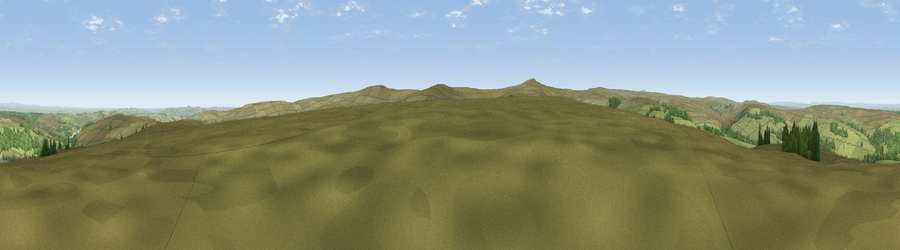

Viewpoint near Blanchland
#10740 in England · top 21% of its area beats it · near BlanchlandWhere it is
The exact computed spot (NY 96725 48075). Click the marker for map links.
The view, rendered

A 360° render of this exact spot computed from the terrain model, tree cover and land cover — summer colours, afternoon light, calibrated against photographs of famous viewpoints. Real trees, hedges and buildings will differ in detail.
The panorama
Grey silhouette: terrain skyline in each direction (720 bearings, Earth curvature and refraction included). Dashed green: skyline with trees (+15 m) and buildings (+8 m) as obstacles. Blue strip: how far the ground is visible on each bearing.
Where the view opens
Wedge length = distance to the farthest visible ground on that bearing (vegetation-aware). Rings at 10, 25 and 50 km.
What fills the view
86% grassland · 11% woodland · 2% cropland ·
Angular shares of the visible panorama (visual magnitude), not map area. Landscape diversity 0.22 (0–1 Shannon).
Key numbers
More beautiful places nearby
The staircase of upgrades: each row has a higher view potential than everything closer. Driving times are estimates from straight-line distance, calibrated against real road routing — check an actual route before setting out.
| Place | Direction | Drive | Score |
|---|---|---|---|
| Viewpoint near Blanchland | ENE · 0 km | ~1 min | 63.0 |
| Viewpoint near Rookhope | S · 2 km | ~6 min | 64.2 |
| Viewpoint near Rookhope | SSW · 3 km | ~8 min | 70.4 |
| Collier Law | SE · 8 km | ~16 min | 71.7 |
| Viewpoint near Allenheads | WSW · 15 km | ~27 min | 74.6 |
| Pontop Pike | ENE · 19 km | ~32 min | 77.8 |
| Little Dun Fell | WSW · 30 km | ~47 min | 78.4 |
| Cross Fell | WSW · 31 km | ~49 min | 78.7 |
54.82750, -2.05250 · source: screening · position refined by local search. Computed location — check access rights before visiting.